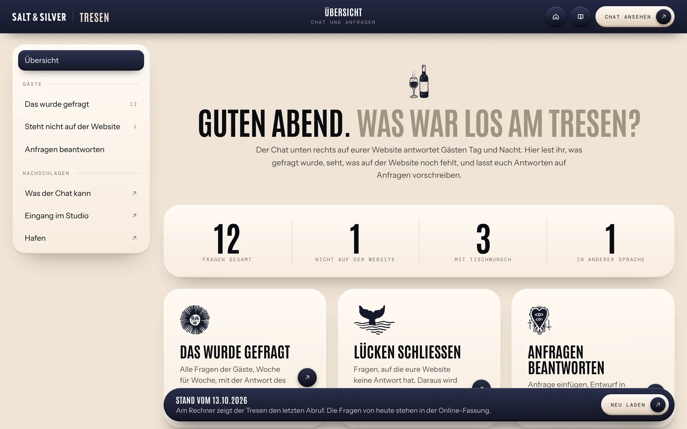
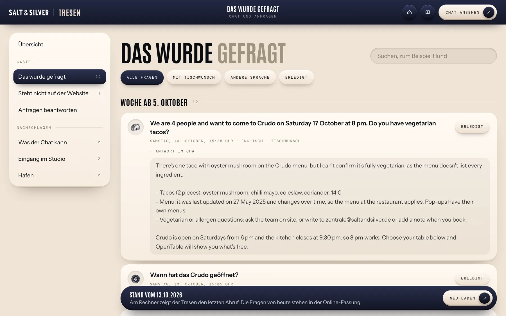
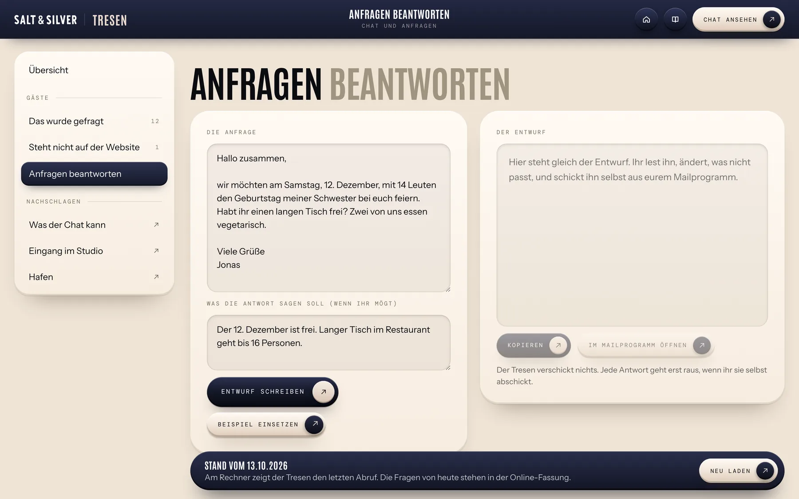

Tresen
Der Überblick
Vier Zahlen sagen, was los war: alle Fragen, Fragen ohne Antwort auf der Website, Fragen mit Tischwunsch und Fragen in einer anderen Sprache.
Darunter führen drei Türen in die Bereiche.

4 Kapitel
Lesen, was Gäste im Chat fragen, und Anfragen in eurem Ton beantworten.

Vier Zahlen sagen, was los war: alle Fragen, Fragen ohne Antwort auf der Website, Fragen mit Tischwunsch und Fragen in einer anderen Sprache.
Darunter führen drei Türen in die Bereiche.

Die Fragen stehen nach Wochen sortiert. «Antwort im Chat» klappt auf, was der Chat geantwortet hat.
Mit «Erledigt» hakt ihr eine Frage ab. Oben filtert ihr nach Tischwunsch, Sprache oder Erledigtem.
Unter «Steht nicht auf der Website» stehen die Fragen, die der Chat nicht aus euren Seiten beantworten konnte.
«Als häufige Frage» führt ins Studio. Dort schreibt ihr die Antwort einmal, und nach dem Veröffentlichen kennt sie auch der Chat.

Fügt links die Mail ein, auf die ihr antworten möchtet. Darunter könnt ihr notieren, was die Antwort sagen soll.
«Entwurf schreiben» liefert rechts einen Vorschlag in eurem Ton. Ihr lest ihn, ändert ihn direkt im Feld und kopiert ihn oder öffnet ihn im Mailprogramm.
Der Tresen verschickt nichts. Fragen und Entwürfe laufen über die Online-Fassung eurer Website, am Rechner ohne Netz zeigt er den letzten Stand.